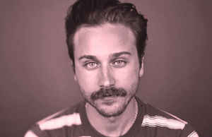
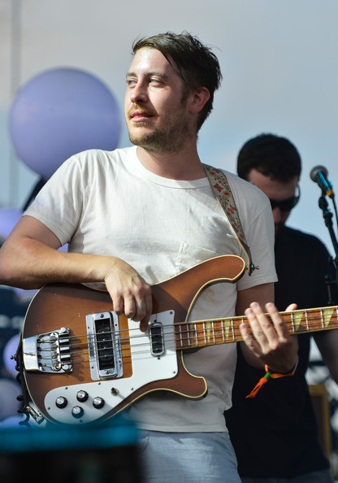
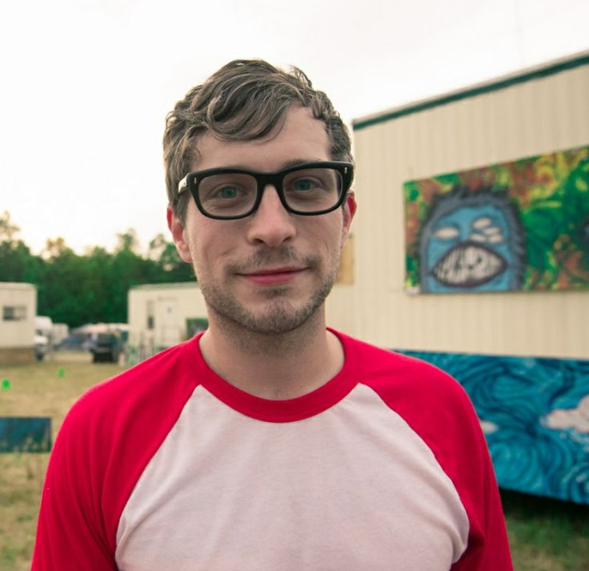
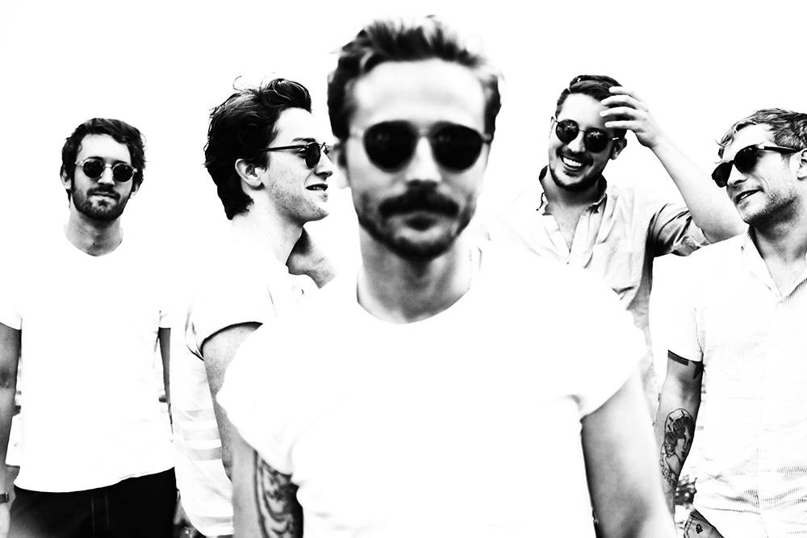
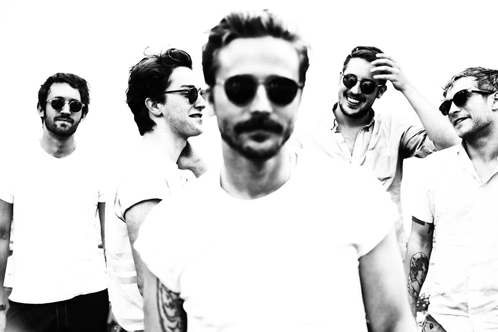
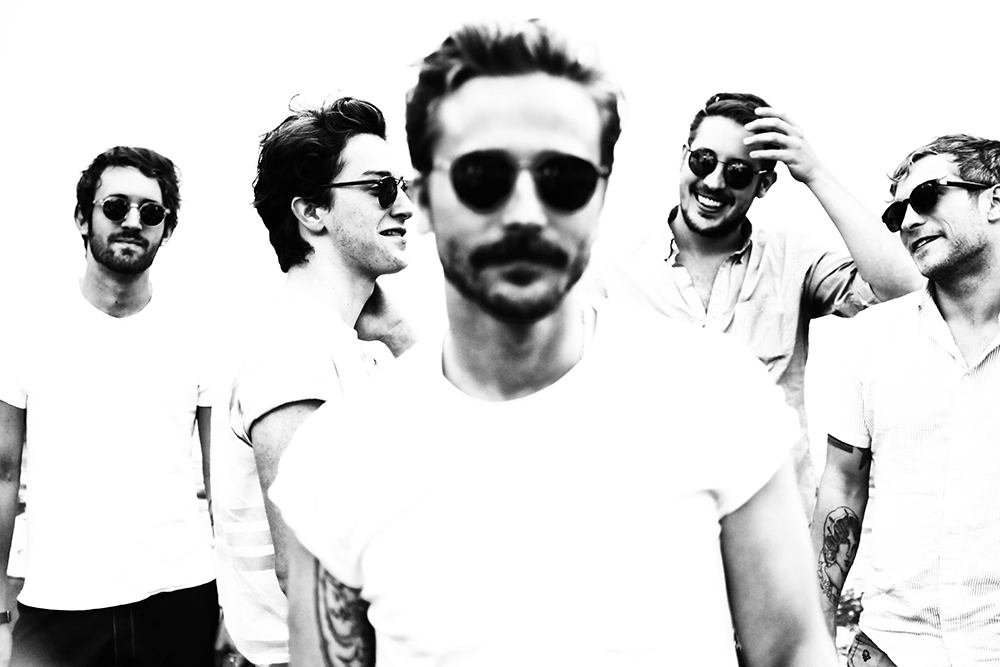

Portugal. The Man is an American rock band from Portland, Oregon. The group consists of John Gourley, Zach Carothers, Kyle O'Quin, Jason Sechrist and Eric Howk. Gourley and Carothers met and began playing music together originally at Wasilla High School in Wasilla, Alaska. Their first two albums were released on Fearless Records. On April 2, 2010, the band signed to Atlantic Records.
The Lords of Portland
Role
John Baldwin Gourley
lead vocals and guitar, mustache man
Zachary Carothers
funkified bass, wavy dance moves
Kyle O'Quin
synthesizer, piano, melody man
Jason Sechrist
drums, beat master in chief

John Baldwin Gourley
John Gourley, also known as Johnny, is the lead vocalist and guitarist for the American rock band Portugal. The Man. John grew up in Wasilla, Alaska and spent many years living off the grid with only his parent's records to entertain him.
John met bandmate Zachary Carothers in high school when he saw him playing his bass guitar outside the cafeteria. John never had any intention of becoming a lead singer, as he naturally has a quiet persona and a nervous stage presence.
However, this all changed when John and Zach's first band, An Anatomy of a Ghost, found itself without a lead man. John assumed the role and has not looked back since, becoming the jam infused style icon that he is today. Now a show from the Lords will feature
minimum interaction from John, as the band spends the majority of their time jamming from song to song.When the boys do decide to talk to the crowd, it is primarily done by Zach. The last 7 years have seen Portugal. The man rise from the ranks of a slightly underground indie band,
to mainstream and chart topping success. Who knows where the Lords will end up next?

Zachary Carothers
As mentioned before, Zach is the reason that John ever enteratained the idea of being a member of a band.
Zachary is also from Wasilla, Alaska. Zachary is loved by many a Portugal.
The Man fan for his skillful and highly recongnizable bass, but also his killer dance moves and formidable stage presence.

Kyle O'Quin
Kyle is the melodic master of the band, sprinkling each and every song with the psychedelic noises only a synthesizer could produce. Kyle became a permanent band member in 2011 after the band had relocated to Portland, Oregon

This is meant to be a brief introduction to the lords of Portland. The real beauty is not in the story, but in the music they make. listen to their latest album Woodstock
RIGHT HERE YO !
 
